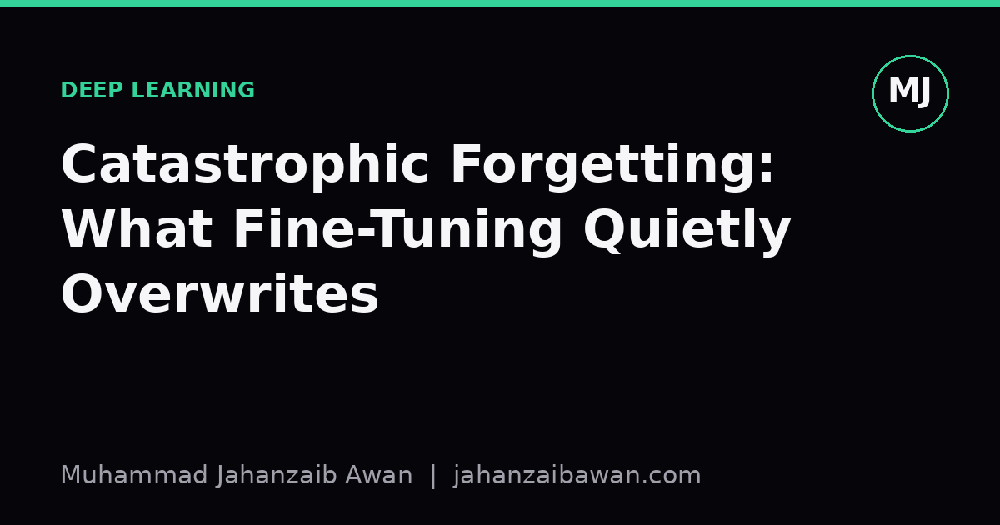

Catastrophic Forgetting: What Fine-Tuning Quietly Overwrites
Fine-tuning a model on a new task often improves the metric you are watching while silently degrading everything else. Here is why that happens and how to catch it before deployment.

The metric that lied
Say you take a general-purpose model, one that already does reasonably well on a broad set of tasks, and you fine-tune it on a narrow dataset for a specific job: classifying customer support tickets by urgency, say. You watch accuracy on that ticket dataset climb from 78 percent to 94 percent over a few epochs. Everyone is pleased. The model ships. Six weeks later someone notices it now struggles with a completely unrelated task it used to handle fine, like detecting sentiment in product reviews, or answering general knowledge questions it previously got right.
This is catastrophic forgetting, and it is not a bug in any single line of code. It is a direct consequence of how gradient descent works when you keep training a network on new data without any mechanism to protect old knowledge. The weights that encoded useful general representations get nudged, epoch after epoch, in whatever direction reduces loss on the new narrow task. Nothing in the standard training loop asks whether those nudges are compatible with everything the model previously learned.
The reason this is easy to miss in practice is simple: you almost never evaluate on the old tasks after fine-tuning. Your validation set is drawn from the new domain, because that is what you are optimising for. The improvement is real and measurable. The damage is real too, but invisible, because nobody built a test to see it. This is the same discipline problem as data leakage: what you do not measure, you cannot see going wrong.
A concrete worked example
Imagine a language model that, before fine-tuning, scores 71 percent on a held-out benchmark of general reasoning questions and 52 percent on your specific ticket-urgency classification task. You fine-tune for three epochs on 20,000 labelled tickets. Ticket-urgency accuracy rises to 91 percent, a genuinely strong result. But if you also re-run the general reasoning benchmark after fine-tuning, you might find it has dropped to 58 percent, down from 71.
Why does this happen so fast? The ticket dataset is narrow: it uses a limited vocabulary, a small number of sentence structures, and a handful of label categories. Three epochs over 20,000 examples means the model sees the same patterns repeatedly, and the optimiser happily reshapes shared representations, things like how the model weighs certain phrases or structures, to fit this narrow distribution. Layers near the output adapt most aggressively, but earlier layers, which encode more general features, are not immune either, especially with a learning rate that is too high or training that runs too long.
The tricky part is that the ticket-urgency number, 91 percent, is the only number in the room during development. It looks like unambiguous success. The 13-point drop on general reasoning only shows up if someone deliberately re-tests on the original benchmark, using the exact same evaluation protocol as before fine-tuning, no shortcuts, no different prompt template, no different sampling temperature. Most teams under time pressure do not run that regression test, and so the forgetting ships quietly, discovered later by users rather than by evaluation.
The scale of the effect depends heavily on how different the new task is from the old ones, how many epochs you run, the learning rate, and how much of the network is unfrozen. Fine-tuning only a small adapter layer while freezing the rest of the network tends to forget less, because most of the original weights are literally untouched. Full fine-tuning of every parameter, especially at a learning rate borrowed from pretraining rather than tuned down for this smaller dataset, tends to forget more.
Why this matters beyond a single benchmark
Catastrophic forgetting matters most in any setting where a model is expected to retain broad competence while being specialised for a narrow use case: a customer service assistant that should still handle general queries after being tuned for a specific product line, a medical imaging model fine-tuned for one type of scan that should not lose accuracy on scan types it was not retrained on, a recommendation model updated with recent user behaviour that should not forget long-standing patterns that are still valid.
It also matters for anyone doing continual or sequential fine-tuning, where a model is updated repeatedly over time as new data arrives. Each round of fine-tuning is a fresh opportunity to overwrite something useful from an earlier round. Without a held-out regression suite that spans all the capabilities you care about, not just the newest one, you have no way of knowing whether round five quietly undid something round two got right. The problem compounds: forgetting from update three might not be visible until update six exposes the gap in an unrelated way, by which point tracing the cause back is much harder.
The honest fix is unglamorous but effective: build and maintain an evaluation suite that covers everything the model needs to do, not just the task you are currently optimising. Run that full suite before and after every fine-tuning run, and treat any material drop on the old tasks as a real regression, not an acceptable trade. If a drop is unavoidable given the new task's demands, that should be a deliberate, documented decision rather than something discovered by a confused user weeks later.
The practical takeaway
A single improving metric during fine-tuning tells you almost nothing about what else might be degrading at the same time. Treat every fine-tuning run as a candidate regression, not just a candidate improvement, and evaluate it that way. Keep a fixed, leakage-aware benchmark that represents the full range of capabilities you rely on, run it consistently before and after training, and be suspicious of any specialisation that comes with no measured cost anywhere else, because that usually means you have not looked hard enough.
Techniques exist to reduce forgetting, from freezing most parameters and only training small adapters, to mixing a slice of the original training distribution back into the fine-tuning data, to using lower learning rates and fewer epochs than intuition suggests. But none of these substitute for the basic discipline of measuring what you might be losing. The model does not know it is forgetting anything. It is your job to check.